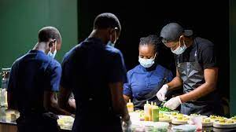
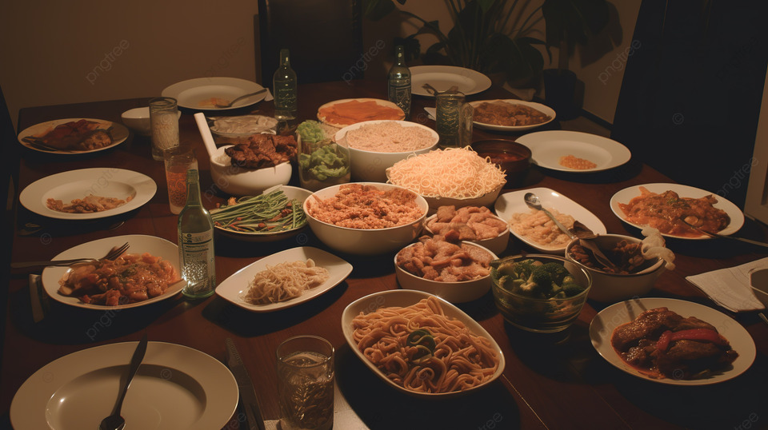

About Us
Welcome to MOZART MAKUSA ELENGI, where passion meets flavor! Our journey began with a shared love for authentic Congolese cuisine and a desire to bring the taste of Congo to your table. Our team is dedicated to crafting culinary masterpieces that reflect the heart and soul of Congolese cooking. At MOZART MAKUSA ELENGI, we believe in the power of food to connect people, evoke memories, and create unforgettable experiences. Our chefs are skilled artisans, blending traditional recipes with innovative techniques to create dishes that are not only visually appealing but also bursting with exquisite flavors.
Quality is at the core of everything we do. We source the freshest local ingredients and spices to ensure that every bite is a celebration of authenticity. Whether you're indulging in our signature Moambe Chicken, savoring the delicate flavors of Saka-Saka, or relishing the sweetness of Banana Fritters, each dish tells a story of Congolese culinary heritage. Our warm and inviting atmosphere is the perfect backdrop for gatherings with friends and family or intimate dinners. We invite you to join us on a gastronomic adventure, where every meal is a journey through the diverse landscapes of Congo.